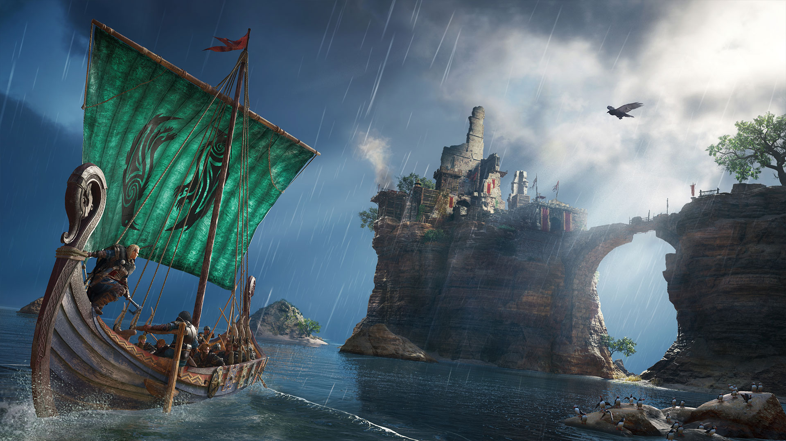
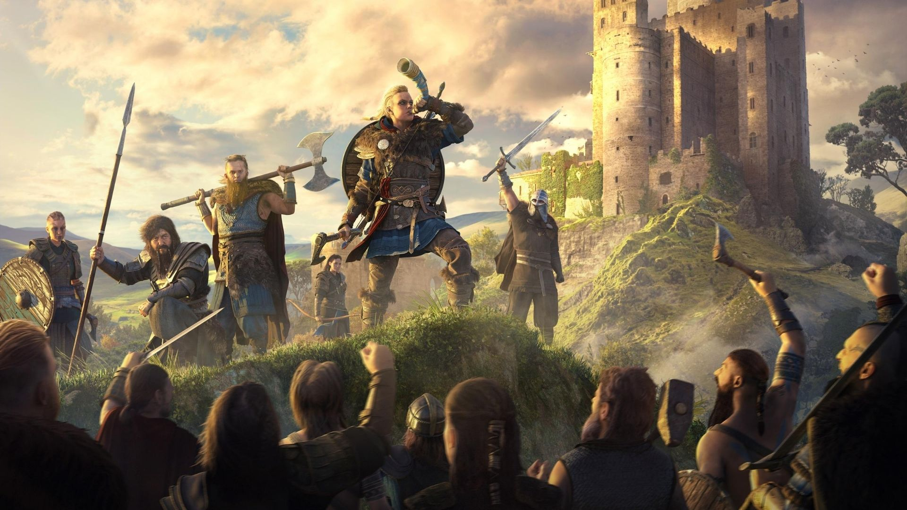
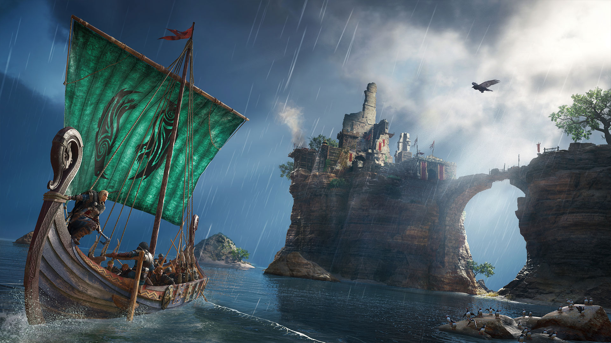
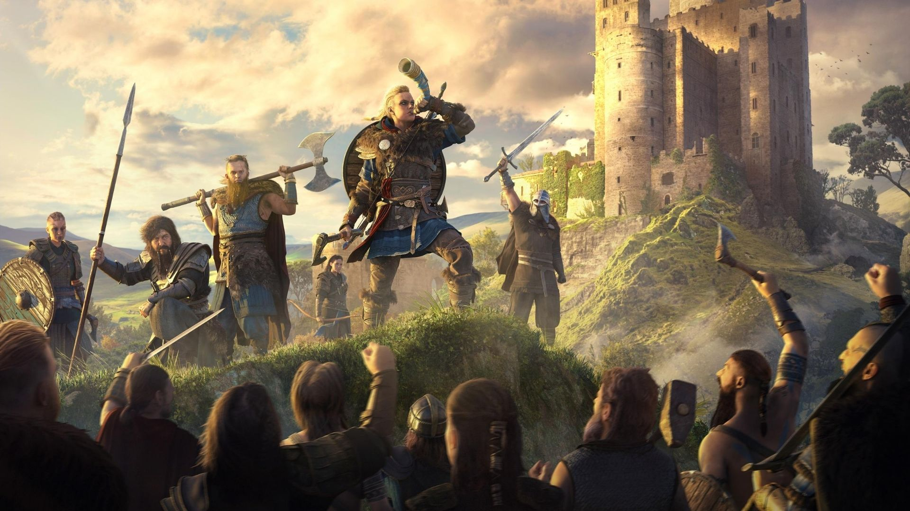

Introducing "Assassin's Creed Valhalla" In the 9th century, players who became Ivors left war-torn and resource-poor Norway to lead their tribe across the icy North Sea to the fragmented but fertile land of England. Players must open up a whole new future for their clansmen, recreating the Vikings' fierce fighting style through a new combat system that includes the ability to wield dual weapons against a wide variety of enemies. Players will be able to use their Viking longship to choose the right location to launch a raid to obtain the wealth and resources they need. When the Vikings began to settle in their new home, they encountered resistance from the Saxons, including Alfred the Great, king of Wessex. Alfred saw the Vikings as barbarian pagans and wanted to be the sole ruler of civilized England. Against all odds, Ivor must do all he can to defend his dream and glory of Valhalla.
Character Setting The game is about a Viking warrior named Ivor who rises from battle and glory. Players can choose male or female characters to play Ivor, and can also use custom tools to customize hair, tattoos, war paint, and equipment. It's worth mentioning that the iconic armour-sleeve sword is back, and Ivor will be able to fight with it again. Every political alliance, combat decision, dialogue option, or equipment schedule affects the world in the game. Therefore, once on the road, players must make wise choices in order to protect their clan home and future.
 


